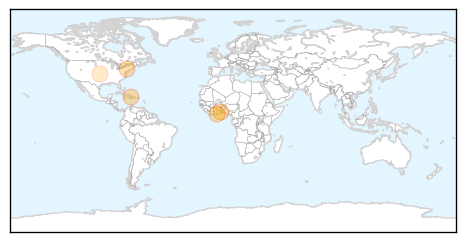
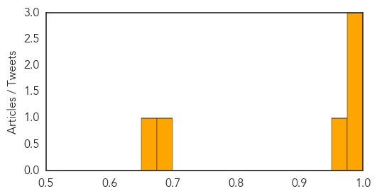
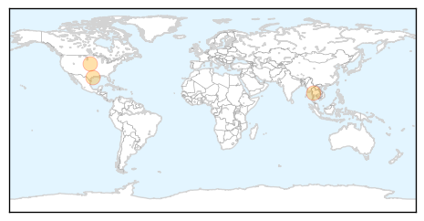

Cholera
30-Day Web Trend
0 alerts, 0 warnings

30-Day Twitter Trend
0 alerts, 0 warnings

Article Locations
Article Confidences
Top Articles:
- 0.996
- Ashanti Region records 7 cholera cases
- 0.994
- Ashanti Region records 7 cholera cases
- 0.988
- Cholera eradication in Haiti will take ‘some years,’ says outgoing UN coordinator
- 0.973
- W. Bahr el Ghazal health minister warns against Cholera outbreak
- 0.690
- Sanitation
- 0.663
- Attention People Who Eat Dog Meat! Here are 3 Major Health Concerns You Should Know About
Top Tweets:
-
No tweets found for Jun 30, 2015
West Nile Virus
30-Day Web Trend
1 alerts, 0 warnings

30-Day Twitter Trend
3 alerts, 0 warnings

Article Locations
Article Confidences

Top Articles:
Top Tweets:
-
No tweets found for Jun 30, 2015